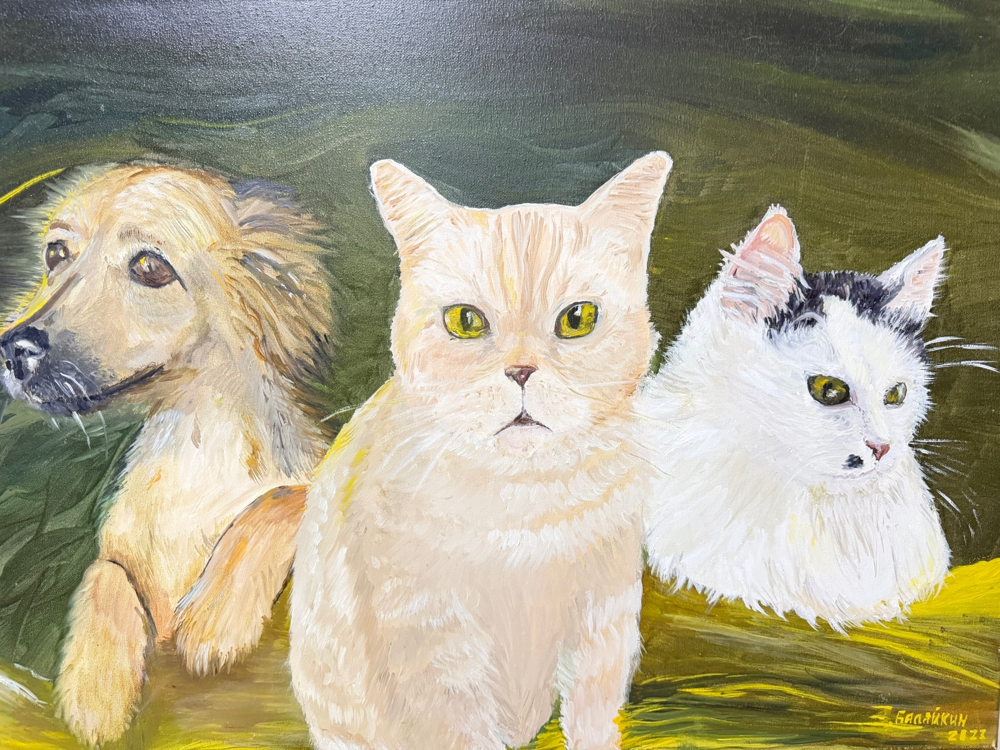
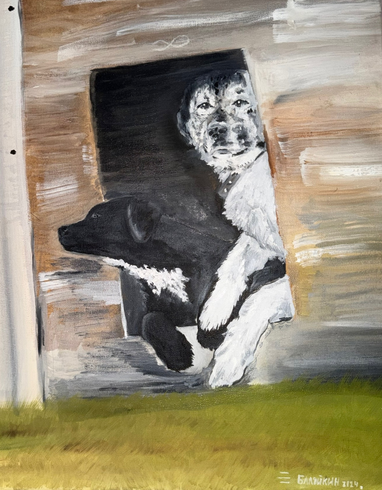
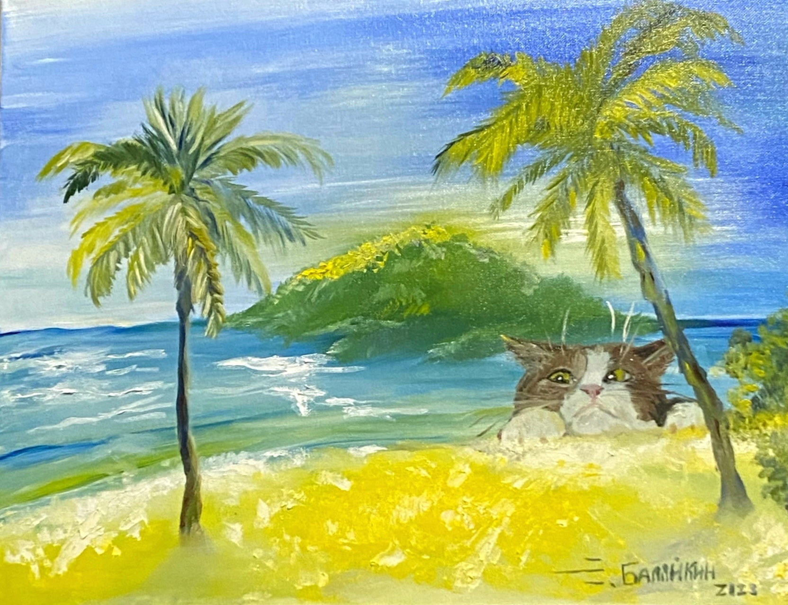
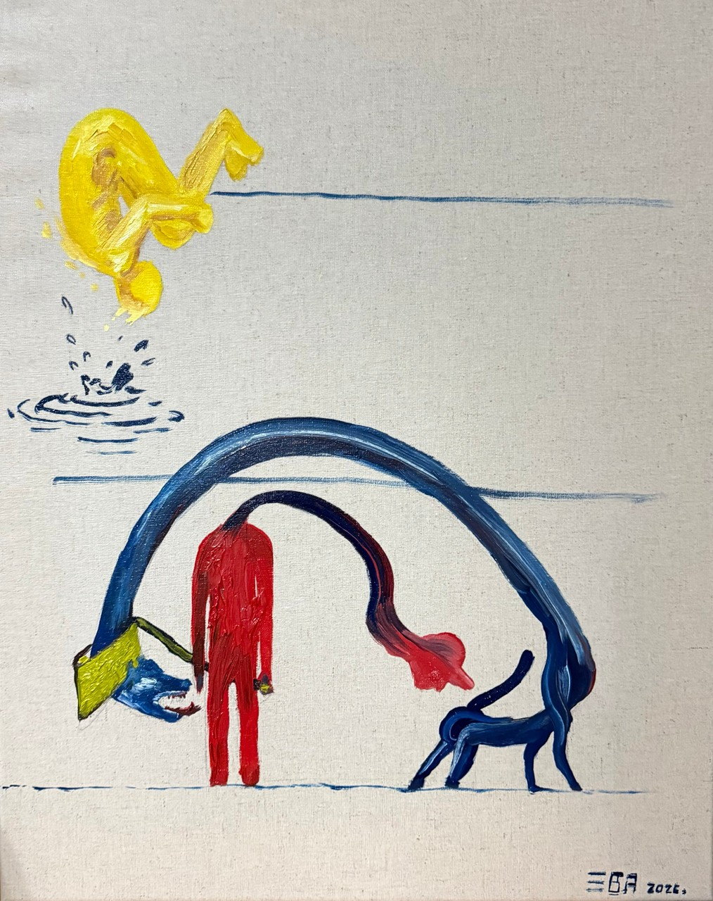
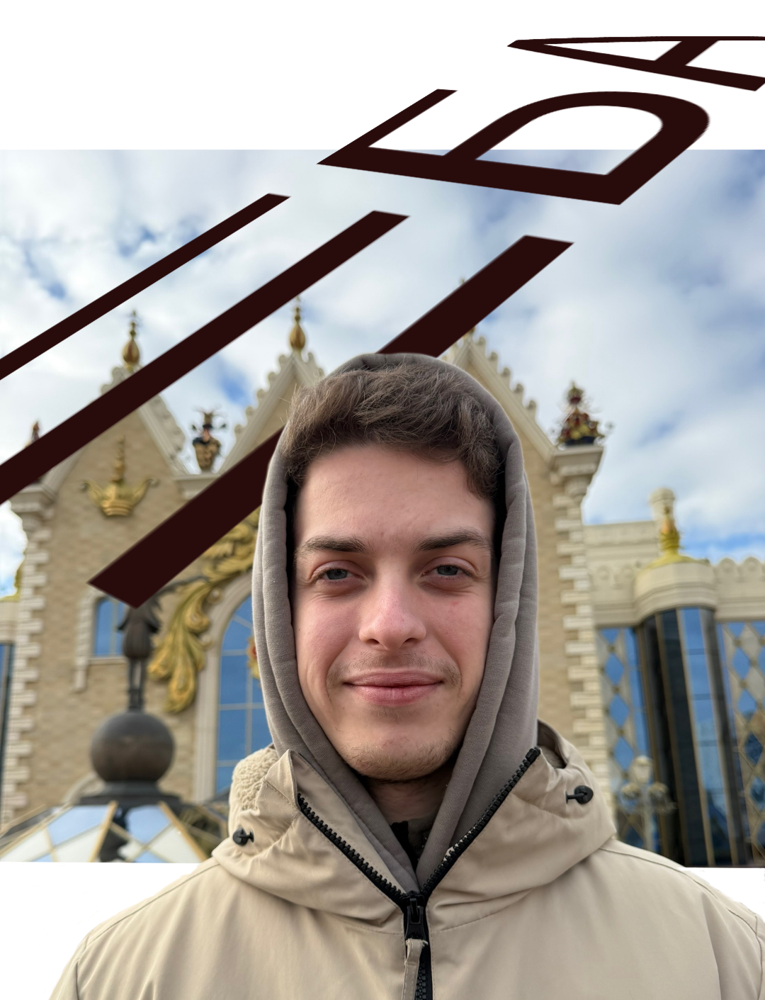

Золото
Золото
Натюрморт о жизни, которая выживает там, где пахнет пылью и честностью. Золото не в небе, оно в моменте тихого покоя.

ХранителиВерная команда, чей дежурный пост никогда не пустует. Пока ты спишь, они бдительно следят за порядком.
 Искра
Искра
Паразитизм на чужой искренности. Безжалостный контраст между бескорыстным даром и обыкновенным использованием.

Всё ещё ждёмТраур по ушедшей жизни. Собаки застыли в вечном ожидании хозяев, а хозяева — в невосполнимой тоске.

ТитаникМиг фатального осознания. Даже находясь на пороге Рая, герой понимает, что сил на последний шаг нет.

ОковыКогда всё идет не так, мы остаемся наедине с собой и ищем то, чего боимся больше всего. Но страх хитрее...

МанифестЛицо проекта ☰БА. Взгляд через призму маргинального символизма.